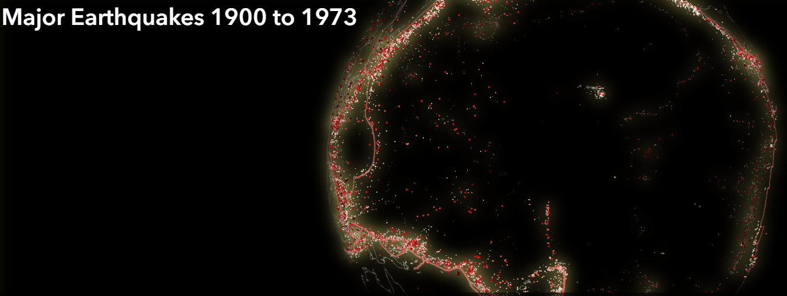

Earthquakes are marked by yellow or green spheres, and red spheres for larger earthquakes. Maps with volcanoes also have red spheres at the surface representing the volcanoes, there is one map including the mantle core boundary outlined by white spheres. Depending on the density of earthquakes of each individual visualization, the color and size of spheres are interpolated. The visualizations are limited by the USGS to less than 20,000 earthquakes. For regional earthquake maps the earthquakes may not be initially evident because the region visualized is on the other side of the Earth globe. Once the globe starts to revolve it indicates that the earthquake data has been loaded and you can turn to the region listed in the title.
The toggle button initially exaggerates the Earthquake depth by a factor of 6. This can act like a magnifying glass or it can be distracting and can be disabled to visualize the earthquakes in their exact location in the Earth's globe.
Global Earthquake maps
 |
Earthquakes, volcanoes with mantle core boundary | A global visualization of magnitude 5 earthquakes with volcanoes marked on the surface. The mantle core boundary is visualized within the Earth highlighting that the mantle comprises 84% of the volume of Earth's sphere. |
 |
Major earthquakes since 1973 | All global major earthquakes greater than 5.6 magnitude since 1973, the year the USGS reports that all earthquakes greater than 4.5 were collected and catalogued. |
 |
Global quakes deeper than 400km since 1973 | In theory these earthquakes should not exist because the descending seafloor is less dense than the mantle at this depth |
 |
12 large earthquakes | A compilation of 12 large earthquakes with fore and after shocks in different regions and from different times on the same visualization, including the Great Sumatran and Tohoku earthquakes |
|  | USGS complete earthquake archive 1900 - 1973. | The complete historical earthquake USGS archive 1900 to 1973 cataloguing all quakes before the 1973 |
 |
Magnitude 5 earthquakes deeper than 50km with volcanoes marked on the surface. | A visualization contrasting earthquakes with volcanoes, illustrating how few volcanoes evolve from earthquakes and descending seafloor. |
Regional Earthquake Maps
| Earthquakes under East Indonesia | A visualization illustrating seafloor descending from 4 different directions under East Indonesia | |
 |
10 years of earthquakes under Japan including the Great Tohoku earthquake in 2011 | A visualization illustrating the high density of earthquakes under Japan as the Great Tohoku earthquake is buried within |
| Earthquakes under the Caribbean basin since 1973 | A visualization capturing the entire Caribbean basin history of earthquakes since 1973 | |
| Earthquakes deeper than 50km under South America since 1973 | A visualization clearly showing the low viscosity zone, the absence of earthquakes, along with very large and deep earthquakes | |
| Earthquakes under Timor and Philippines since 1973 | Another visualization showing the low viscosity zone with many large earthquakes deeper than 400km | |
 |
Earthquakes under Himalaya mountains and Iceland since 1973 | A visualization that does not show a low viscosity zone under the Himalayan mountains, nor do any earthquakes occur deeper than 400km |
Earthquakes under volcanoes
 |
Earthquakes under Etna and Stromboli volcanoes Sicily, Italy | A beautiful visualization of earthquakes feeding Etna and Stromboli volcanoes in Sicily, Italy with ascending melt from the African plate descending under Europe |
| Earthquakes under Mt Pinatubo and Mt Ta'al Luzon, Philippines | While not as dramatic as with Stromboli, this visualization shows ascending melt feeding the separate volcanoes. Also a curious clustering of earthquakes at 10,33 and 100km depth | |
| Earthquakes under Mt Soputan and Mt Lugan-Empung volcanoes, Indonesia | A visualization with the descending seafloor melt ascending to feed the Soputan and Lukan-Empung volcanoes in Indonesia, more artifact at the 33km depth | |
| Earthquakes under Sabancaya volcano, Chile | A visualization of earthquakes under Sabancaya volcano showing the descending Nazca plate beneath the South American plate feeding the volcano | |
| Earthquakes under Pacaya volcano, Guatemala | A visualization showing the Pacific plate descending under the North American plate with ascending melt feeding the Pacaya volcano, Guatemala |
On why these pretty maps are interesting....
Address and Contact information
All visualizations were created by Earthquake viz Contact FormVenezia, Italia
Last updated
19 September 2021